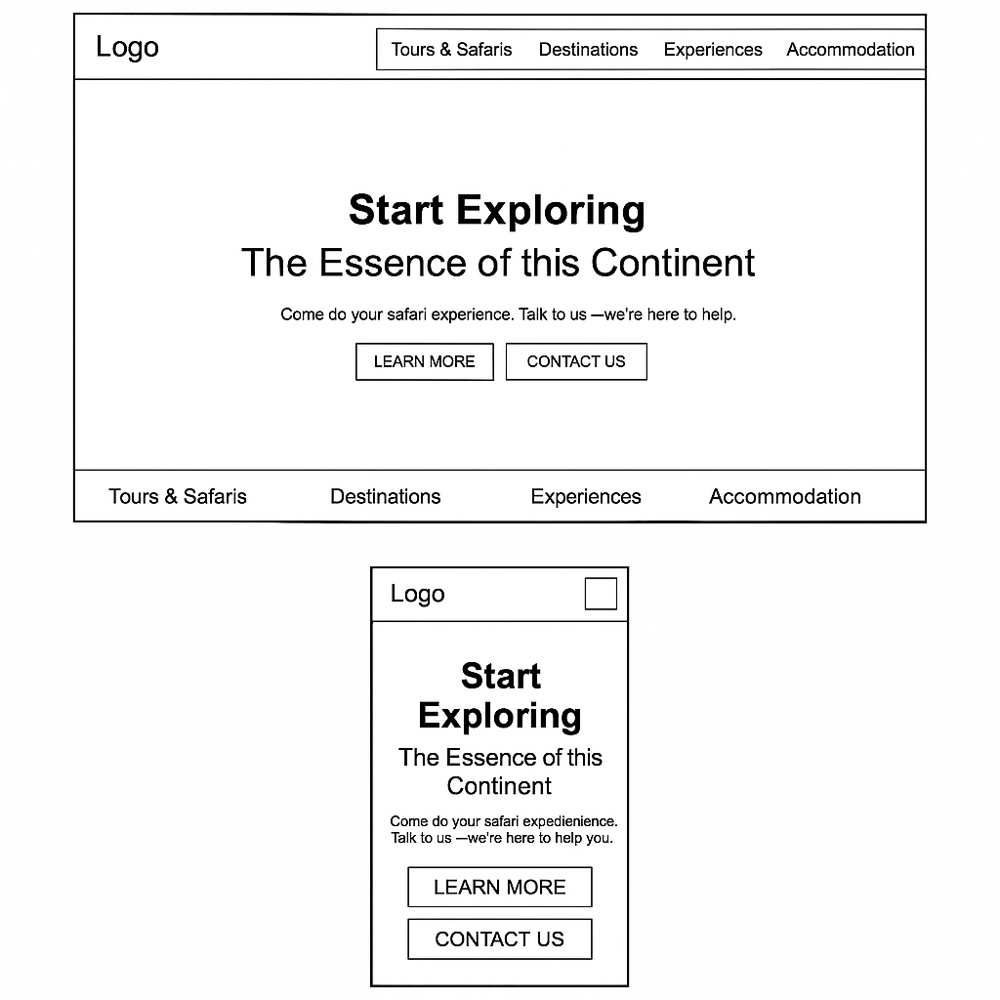

Site Plan Document
Kenya Safari Adventures is a name that captures the essence of exploring Kenya's incredible wildlife and scenic landscapes. It’s memorable, descriptive, and aligns with the goals of the project.
This website is designed to inform and inspire tourists interested in going on a safari in Kenya. It will highlight major parks, offer travel tips, and allow visitors to submit inquiries through a booking form. The site will also use interactive elements to improve engagement and user experience.
Primary color: Deep green (#006400) – used for headers and navigation.
Accent color: Safari tan (#c2b280) – used for background and content sections.
Heading Font: Georgia – used for page titles and section headers.
Body Font: Segoe UI / Tahoma / Verdana – for content readability.
Desktop and Mobile View:
These wireframes represent a basic homepage layout with a hero image, welcome text, navigation, featured parks section, and a footer. Actual images and text will be added during development.